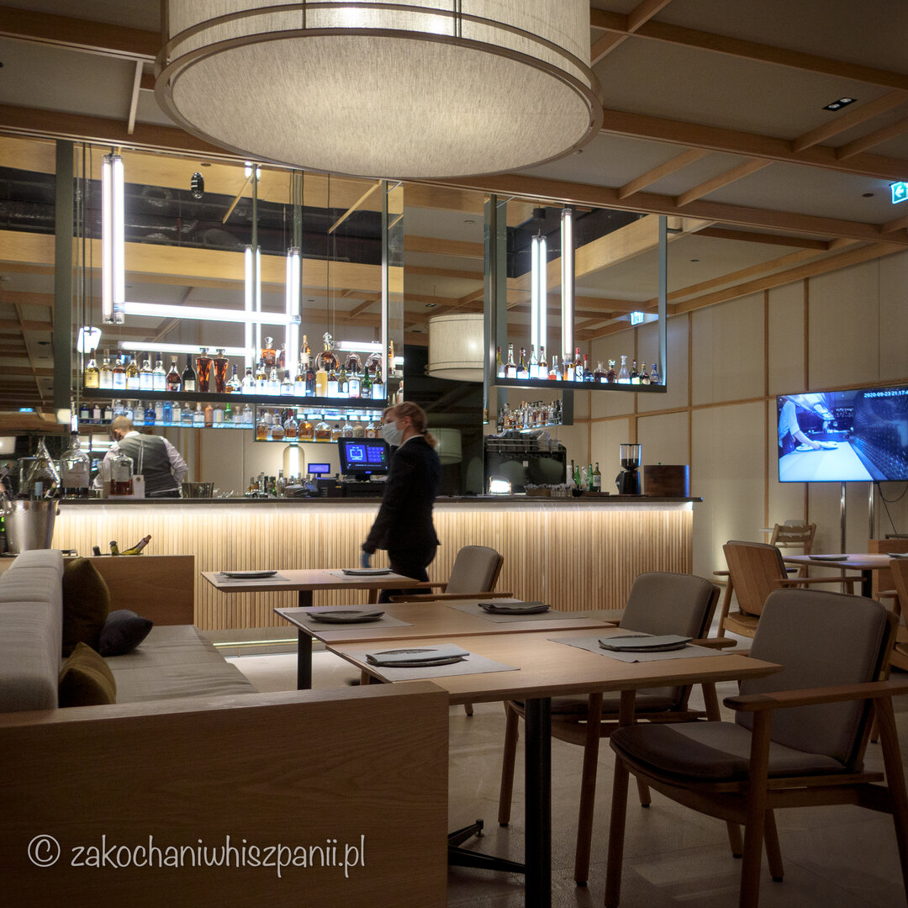
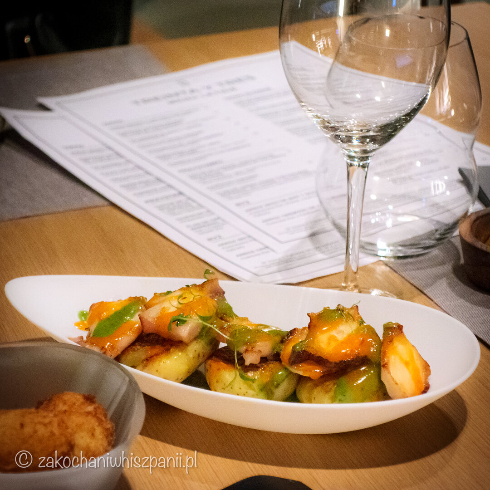
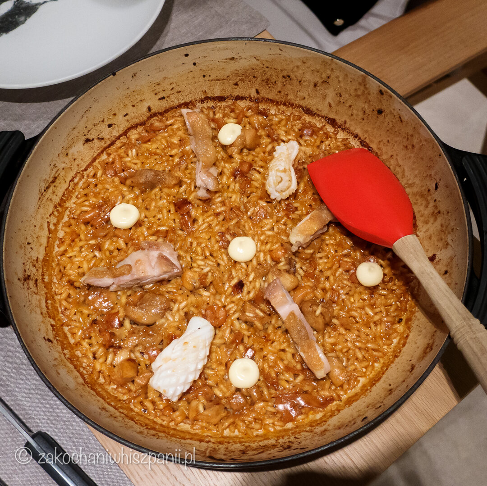

33. Treinta y Tres — Smaki Półwyspu Iberyjskiego Restauracja z kuchnią hiszpańską w Gdańsku
Ostatnio pisaliśmy o naszych wakacjach w 2020 roku nad polskim morzem. Chcieliśmy mieć choć trochę namiastki takiego urlopu, jaki moglibyśmy przeżyć w Hiszpanii. Z poprzedniego wpisu wiesz, że zatrzymaliśmy się w hotelu Novotel Marina Gdańsk. Mieszkaliśmy w przyjemny pokoju z centralnym widokiem na morze. Po smacznym śniadaniu i relaksie na plaży ruszyliśmy zwiedzać Gdańsk od kulinarnej strony.

Zarezerwowaliśmy stolik w hiszpańskiej restauracji Treinta y Tres, która znajduje się na 33 piętrze najwyższego gdańskiego biurowca Olivia Star. Właścicielem restauracji jest Paco Perez. Wnętrze tego lokalu zostało zaprojektowane przez hiszpańskie studio Sandra Tarruella. Z trzydziestego trzeciego piętra, na którym znajduje się restauracja, rozpościera się wyjątkowy widok na Morze Bałtyckie. To wszystko robi na nas duże wrażenie. Jest tu elegancko, czujesz, że to wnętrze ma energię typową dla Hiszpanii.
Na stronie internetowej restauracji napisano "Treinta y Tres" to hiszpańskie potrawy przygotowywane przez mistrzów gastronomii w niezobowiązującym, jednak eleganckim miejscu. Pobyt w Treinta y Tres to kulinarna podróż przez wiele regionów Hiszpanii w towarzystwie niezapomnianego widoku 140 metrów nad ziemią. W menu można znaleźć takie specjały jak kolorowe tapas, wypiekane na miejscu brioszki, kalmary, ośmiornice czy tortille.
Na początek otrzymaliśmy czekadełko składające się z buñuelos z cukinii i sosem śmietanowo-koperkowym. Delikatne, puszyste.
Zamówiliśmy trzy przystawki, hiszpańskie krokiety (croquetas), ośmiornicę, oraz patatas bravas i do tego butelkę poleconego przez obsługę białego wina. Pierwsza przystawka, którą otrzymaliśmy to croquetas, miały idealną konsystencję, bardzo przypominały w smaku te, które nam najbardziej smakują w Barcelonie w restauracji Escriba. Kto najwięcej zjadł hiszpańskich croquetas? Oczywiście nasza Natalka :)

Następna przystawka to ośmiornica grillowana z ziemniaczkami, do tego sosy kanaryjskie mojo rojo i mojo verde. Ośmiornica smaczna, miękka, bardzo nam przypadła do gustu. Co do sosów mojo uważamy, że były zbyt delikatne. Na Wyspach Kanaryjskich są mocno intensywne, czuć w nich większą ilość dodanego czosnku, kolendry itp.
I ostania przystawka, którą zamówiliśmy to patatas bravas. Byliśmy mile zaskoczeni. Ziemniaczki były podane w formie roladek dla nas w zupełnie nowym kształcie niż ten, który do tej pory nam podawano. Miękkie kremowe troszkę przypominały dufinki z dodatkiem niewielkiej ilości panierki. Patatas bravas podane z łagodnym sosem pomidorowym i aioli. Dla nas bomba!!!

Po smacznych przystawkach oczekiwaliśmy na danie główne Arroz seco de mar y montaña. W karcie opisano je jako podsuszany ryż z dodatkiem wywaru z kalmarów, podany z kurczakiem i kalmarami. Zamawiając danie, zostaliśmy poinformowani, że potrawa ta jest podobna do paelli, ale nią nie jest. Faktycznie, pod względem konsystencji i formy okazało się do niej podobne. Przyprawy i dodatki natomiast były nieco inne, niż mieliśmy do tej pory okazję skosztować. Dało się wyczuć intensywny smak kalmarów, kurczak nie był suchy, ryż przygotowany w punkt i rzeczywiście, jak w paelli, „podsuszony” na patelni. Danie było bardzo dobre i warte zapamiętania.

Do rachunku otrzymaliśmy małe pralinki, które były przepyszne. Chętnie wrócimy do tego hiszpańskiego klimatu, który panuje w restauracji Treinta y Tres w Gdańsku.
Najnowsze wpisy


Tagi